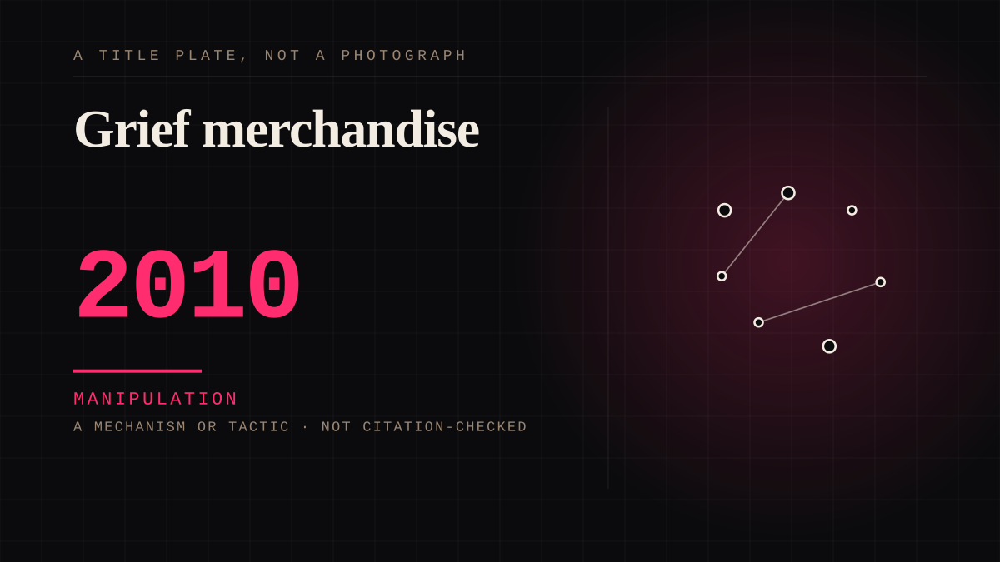

A mechanism or tactic · 2010 · Merch
Grief merchandise
Apparel, prints and objects released after a death, quickly, at a profit.

The commercial form of parasocial grief, and nobody involved pretends otherwise any more. It also sustains a cottage industry of people whose entire output is the deaths of people they never met.
Manipulation. One-sided attachment engineered for somebody else's benefit. Paid intimacy, parasocial persuasion, sasaeng, grief extraction, the streak. The lane that pays the bills and the lane that causes the most harm, frequently at the same time.
Where it sits
2010 2010+ · 2010 2026
Provenance · 2 source record(s)
- retrievableThe commercial record of the immediate aftermath, in the trade press, in the same week: Billboard ran 'Cobain Mourned by Fans, Industryites in Memorials, Music Stores' on 23 April 1994 - memorials and merchandise as a single subjectBorzen/Borzillo, Billboard (2019), reporting the 23 April 1994 article. ↗
- unverifiedAnd the deadline in which it must happen: within two hours of positive identification, the retail market for his work was empty. Grief merchandise has a shelf life measured in hoursBorzillo, Billboard (2019).
Connected · 2 out, 1 in
Grief as a product surfacedepicts · 2020 · A mechanism or tacticGrieving a person you never metcites · 1970 · A mechanism or tacticGrief as a product surfacedepicts · 2020 · A mechanism or tactic
Reported as a story
Fans called Dolly Parton's death the lowest point of 2026Not the saddest thing that happened. The lowest.Three grief experts on whether it is normal to mourn a celebrityStylist asked the question out loud so you would not have to.One death in Assam became a country thinking out loudA year on, the public grief is still doing work. The Assam Tribune explains what it turned into.A woman died in Seoul and by the next day the argument was about whether the fandom was toxicThe pivot from a death to a discourse about ourselves, in about a day, in front of a diaspora that had to watch it happen.
It sits in